|
英国のDXグループ、FSDXA(The Five Star DXers Association)が主催する国際チームによる3B9C ロドリゲス島(Rodrigues Is.)
のDX-Peditionが2004年3月19日から4月12日に掛けて運用された。 FSDXAによるDX-Peditionは、1999年の9M0C(Spratly Is)、2001年のD68C(Comoros)に続き、 今回で3回目の運用となる。3年前のD68Cの運用では総QSO数168,722のDX-Peditionの歴代最多QSO記録を達成している。
[第1陣メンバー出発] 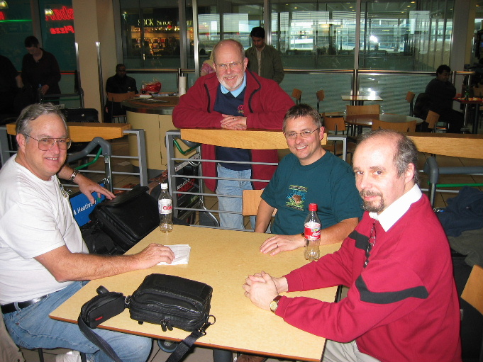 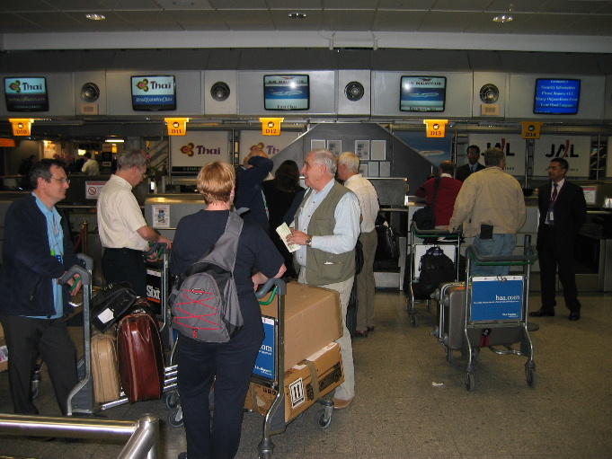 (左)英国ヒースロー空港に三々五々集合するメンバー/出発の最終手続き
[ロドリゲス島] 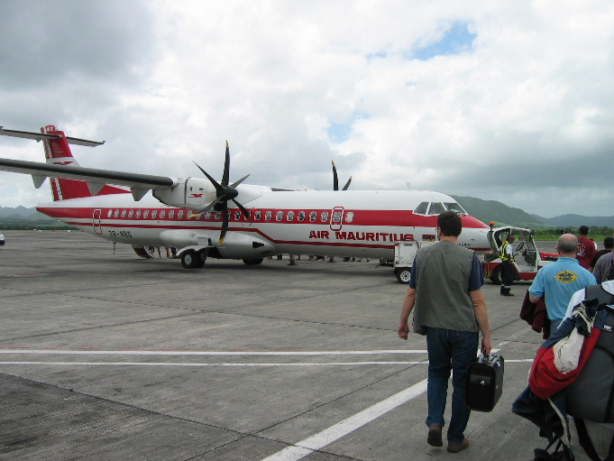 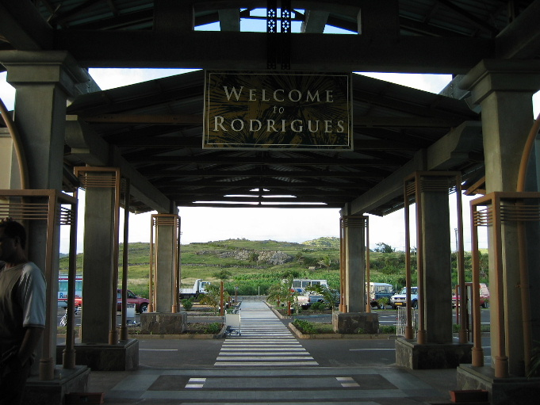 (左)モーリシャスで乗り換え/ロドリゲスの空港出口ゲート。 南半球に位置するロドリゲス島は、この季節(3月/4月)は秋。太陽は60度方向から昇り島の北側を通って、290度方向の山の頂上付近に沈んでいった。 ロドリゲス島は晴天でも東方向からの季節風が強く、時々短時間ながら強烈なスコールが襲ってくる。 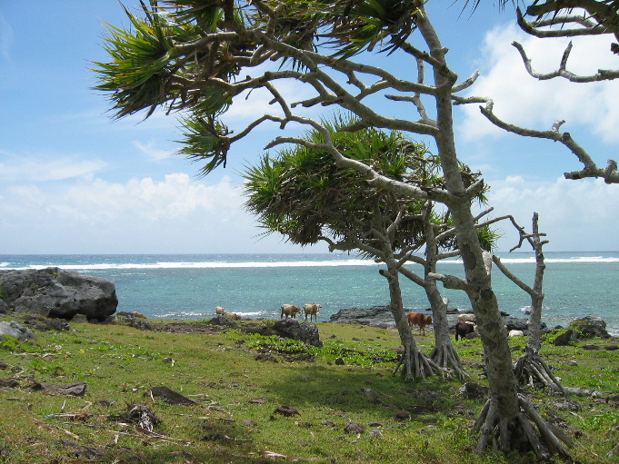 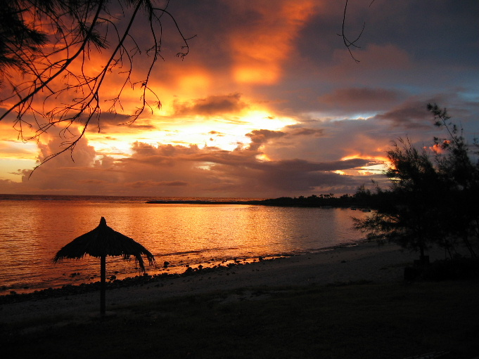 リーフに囲まれたCotton Bayの海岸(北方向)/ロドリゲスの朝焼け [運用準備] 2003年の12月中旬にイギリス本国から貨物船で発送された4.5トンの機材を積載したコンテナーは、 われわれより一足早い2月26日にロドリゲス島の西海岸にあるPort Mathurin港に届いていた。 3月16日夕方に到着したメンバーは、翌17日早朝からさっそく通関手続きを終えた機材を港からホテルまで手分けして運搬することになった。 島の西側に位置するPort Mathurin港からホテルまでは約25Km、トラック4台分の機材を山越えで運ぶのは大変な作業だった。

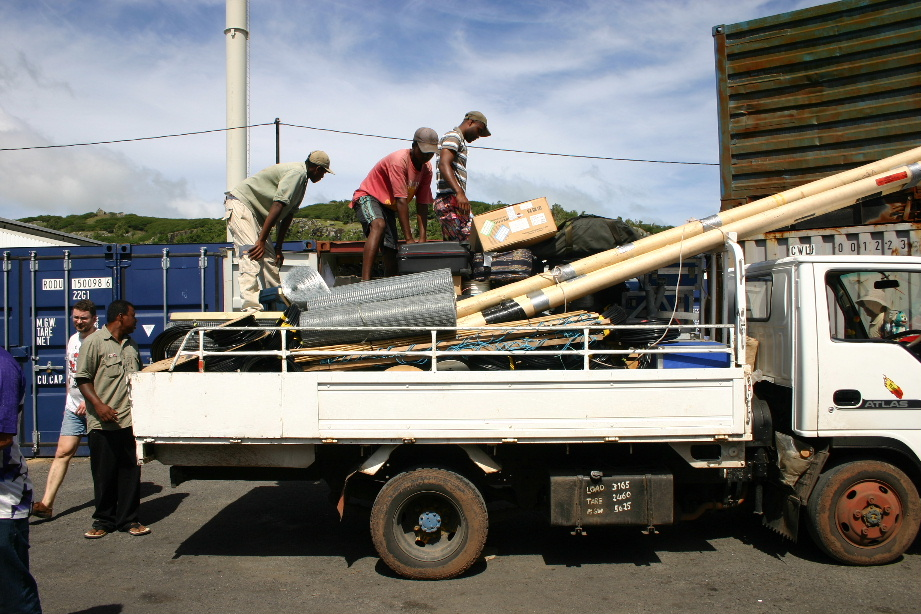 コンテナーを開けるG3NUG(右)とG3WGV/機材は陸路トラックで25Km離れたホテルまで運ばれた。
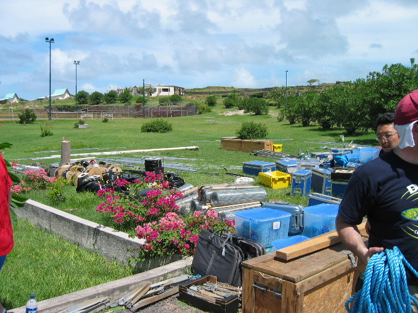 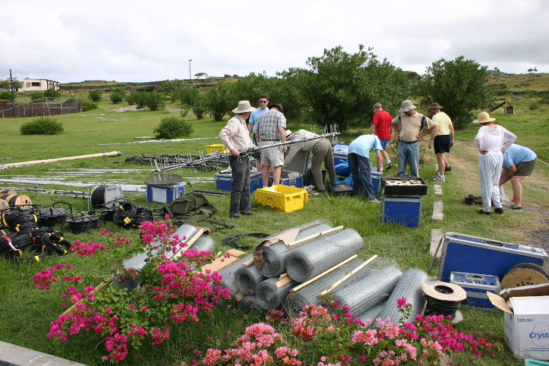 港のコンテナーからトラックで運ばれた機材はホテルの庭に広げられた
[アンテナ建設] 3月17日から19日の3日間は機器の設置組とアンテナ工事組の4班に分かれ"局造り"の作業に入った。 3B9Cの運用場所は、ホテル本館の建物から独立した最西端の901室、902室の2棟のコテージが使われた。 ここに16局分の運用サイト(Site)が8局づつ分散されて設置された。 各サイトはバンドごとに、YAESUのFT-1000MK5とVL-1000のラインがロギング用のPC(IBM ThinkPad 600E)と共に並べられた。 50MHzのサイトは"Site-7"としてFT-920とVL-1000のラインが901室に設置された。 901室には50MHzのほかに1.8MHz、3.5/3.8MHz(CW)、10MHz、21MHz、28MHz、430MHz(EME用)のサイトも同居した。 "Starlog"の"心臓部"となるStar Server(管理サーバー)やインターネットに接続されるメインのコンピューター等は、 901室の浴室スペースを改造したコンピューター室に置かれた。 902室も同様の配置で、こちらには3.8MHz(SSB)、7MHz、14MHz、18MHz、24MHz、28MHz(SSB)、29MHz(FM)などが設置された。
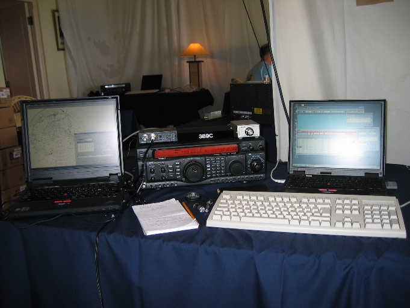 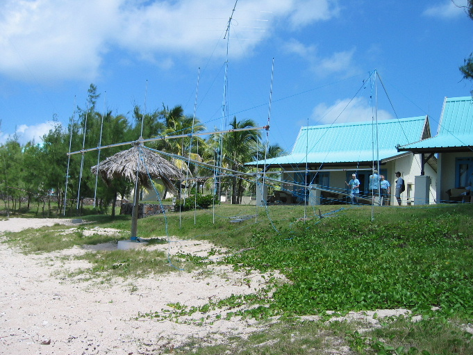 901号室の50MHzのサイト/3B9Cの運用場所となった2棟のコテージ
[アンテナ・ファーム] 炎天下でのアンテナ建ての作業は17日から19日まで丸々3日間が費やされた。 1.8MHzのTitanex V160S、3.5/3.8MHzのTitanex V80Sが2組、7MHzのfull-size 4-Square、14MHzの3eleなど、 大型アンテナが次々と上がり、コテージの周囲はみるみるうちに"アンテナ・ファーム"と化して行った。 50MHzのアンテナは、出来るだけ同軸ケーブルのロスを軽減するため、901室コテージ脇に建てられることになった。 海岸に近いこの場所は砂地で地盤が弱く、用意していたステーアンカーでは転倒の危険があるため、 120cmの"L型アングル"を地元から調達する事になった。このため6mのアンテナ工事は一番最後に回され、 結局、6ele(Cushcraft A506S)×2のスタック・アンテナが上がったのは運用開始が2時間後に迫った19日の夕方になってからだった。
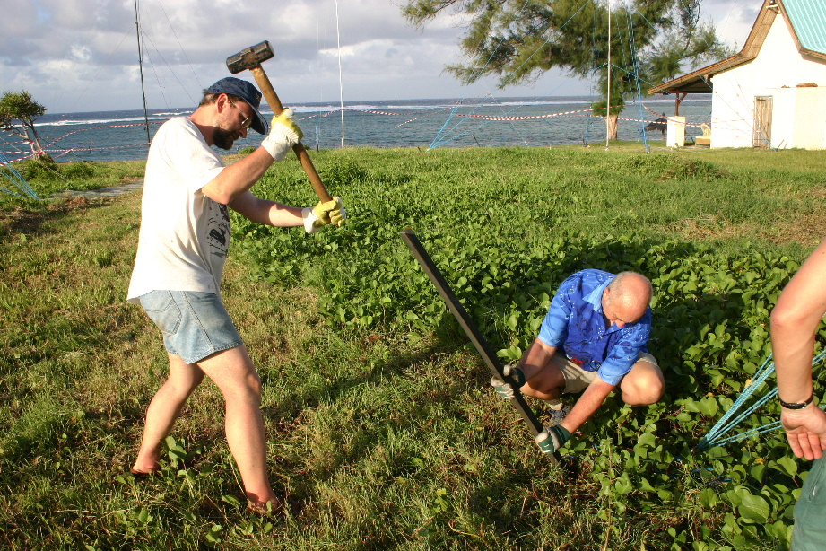 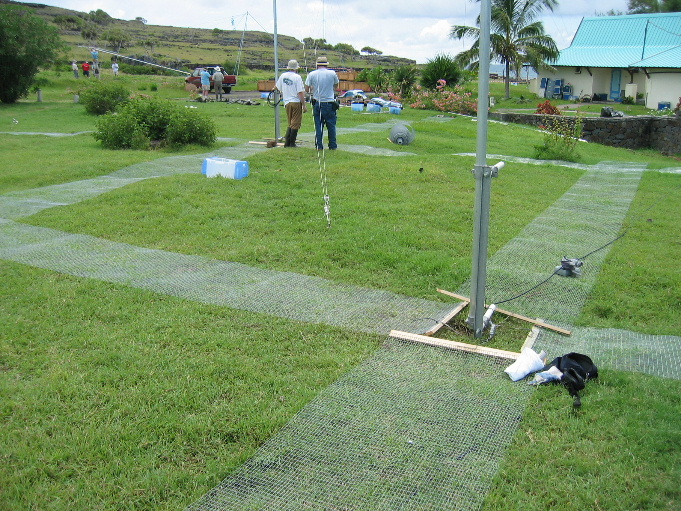 120cmの"L型アングル"を打ち込む/バーチカルアンテナ用のアースには"金網"が使われた
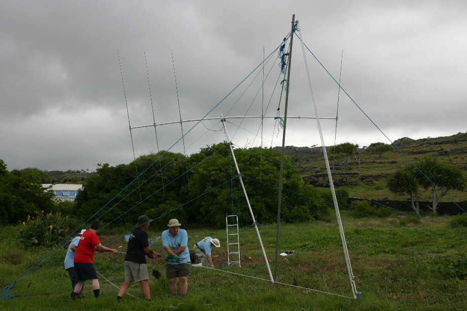 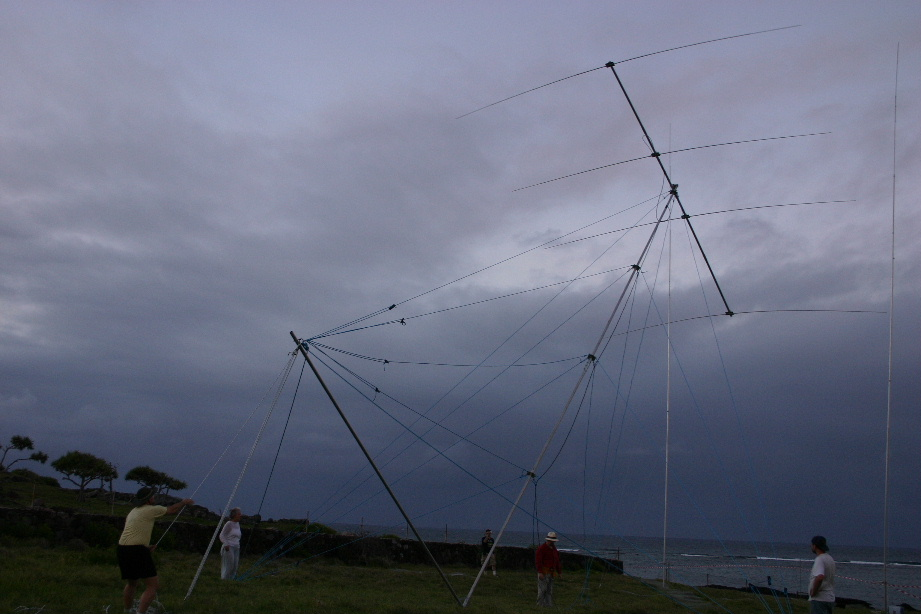 アンテナは"梃子の原理？"を使い引き上げる/14MHzのアンテナが上がる [3B9C・運用開始] FSDXAのDX-Pedition運用は、毎回コンピューターでLOG管理される方式が取られているが、 今回はコンピューター担当のG3WGV・Johnによって開発された「StarLog」と呼ばれるウィンドウズ・ベース方式の新しいプログラムが使われた。 この「StarLog」の使用にあたり、DX-Peditionに参加するメンバーは、事前にG3WGVのサーバーから直接プログラムをダウンロードし、 現地での運用開始までに自宅でプログラムを"習熟"することが義務つけられた。 「StarLog」の説明書もダウンロードして読まなければならず、参加者には出発の"準備"としてかなりのプレッシャーとなった。 実際にサーバーにアクセスしてシュミレーションを行う事う実験も試みられたが、これが上手く動作しなかったため、 メンバーの心配を倍加させてしまった。 本番の運用は予定通り「StarLog」で管理されたが、実際に使用してみると、想像していたよりも使い勝手の良いプログラムだった。 3B9Cの運用は現地時間の3月19日の24:00時(UTC:3月19日20:00z、UTCとの時差4時間)に各バンド一斉にスタートした。 各サイト(Site)間は2.4GHzのLANで接続され、リアルタイムで運用状況を把握出来るのも以前と変わりなかった。 筆者(JA1RJU)が担当となった50MHzは、運用開始直前の夕方にアンテナが立ち上がったばかりで、 事前にバンドの様子を探る事が出来ず、コンデションの予備知識を得る間もなく本番がスタートしてしまった。 しかし、幸か不幸かこの日の深夜の6mバンドは完全に"死んで"いた。 3年前のD68C(Comoros)の経験から、夜間の50MHzバンドは、赤道を隔てた南北の"TEP"のパスの可能性は考えられたものの、 この夜は48MHz帯で聞こえるはずのヨーロッパのTV信号は"カケラ"も聞こえなかった。 時差5時間のJAは、早朝の5時で6mのオープンの可能性はゼロに近いため、アンテナをヨーロッパに向けたまま、 50.102MHzで自動送信される"CQ CQ de 3B9C 3B9C"をセットしたが何の反応も無かった。 今夜はHF帯のパイルアップを横目に、翌朝のオープンを期待して休むことにした。
【3B9C 運用周波数】
Band(MHz) CW SSB RTTY FM SSTV PSK
1.8 1822 1842 -- -- -- --
3.5 3502 3795 3570 -- -- --
7 7002 7052 7035 -- -- --
10.1 10102 -- -- -- -- --
14 14022 14195 14085 -- 14230 14071
18 18072 18145 -- -- -- --
21 21022 21295 21085 -- -- 21071
24.9 24892 24945 -- -- -- --
28 28022 28495 28075 29580 -- 28071
50 50102 50145 -- -- -- --
50(Beacon) 50090
Satellite Look for us on OSCAR-40
M'bounce 70cm & 6m band
[運用スケジュール表] オペレーター個々の日々の運用スケジュール表の管理は、全てこの「StarLog」のプログラム上で行われた。 今回の運用スケジュールでは1単位が2時間で、平均2単位(4時間)、最長で3単位(6時間)の"勤務"が各オペレーターに割り当てられた。 運用交代時間はPCの画面上で毎日周知された。 筆者(JA1RJU)もさっそく勤務表をチェックして見た。 運用スケジュール表を見てびっくり！。 なんと、今回は帰国までの滞在中の全期間(2.5週)が"50MHzの24時間勤務"に割り振られていた！。 サンスポットの低下時の50MHzではまともなパスは期待出来ないと予想していただけに、 何局QSO出来るのか心配になった。
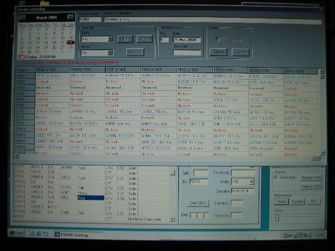 3B9Cの勤務表
[3B9C・参加メンバー]
◎ 3B9C・DXpedition Member and Length of Stay(*印 全期間運用者)
G3NUG Eric Neville Cheadle *(3/16-4/15) 9M0C.D68C
G3BJ(exG3OZF) Don Beattie *(3/16-4/15) 9M0C.D68C
G3WGV John R. Linford *(3/16-4/15) 9M0C.D68C
G0OPB Tony James Cannin *(3/16-4/15) 9M0C.D68C
DL7AKC Jens Sperling *(3/16-4/15) D68C
G4JKS Mary Hilary Claytonsmith *(3/16-4/15)
G3NHL Chris D.Lewis *(3/16-4/15)
G3IZD Ivan Esmond Davies *(3/16-4/15)
3B9FR Robert (3/16-4/15)
G3SED Everad Michael Devereux (3/16-4/01) 9M0C.D68C
G3XTT Donald I.Field (3/16-4/01) 9M0C.D68C
JA1RJU Kazuo Ogasawara (3/16-4/01) 9M0C.D68C
GU4YOX Robert William Beebe (3/16-4/01) D68C
G4KIU Nigel D.Peacock (3/16-4/01) D68C
G4TSH Justin M.Snow (3/16-4/01) D68C
N7CQQ John Paul Kennon (3/16-4/01) D68C
W3EF Maury Peiperl (3/16-3/26) D68C
EI5DI Paul Gerard O'kane (3/16-4/01)
F5VHN Robert Thain (3/16-4/01)
KF7E James L.Henderson (3/16-4/01)
G4IUF Michael H.Parker (3/16-4/01)
JH4RHF Junichi Tanaka (3/16-4/01)
G3RAU Derek Moffatt (3/16-4/01)
G3WKL John W.Goyld (3/16-4/01)
DK7YY Falk D.Weinhold (3/16-4/01)
K3NA Eric Lee Scace (3/16-4/01)
G0MRF David Bowman (3/30-4/15)
M0GMT Daniel Clapp (3/30-4/15)
G4FRE David J.Robinson (3/30-4/15)
G4VXE Timothy H.Kriby (4/02-4/15) D68C
(NK7C Pat=中止)
3B9C(Rodrigues Is) Homepage

|